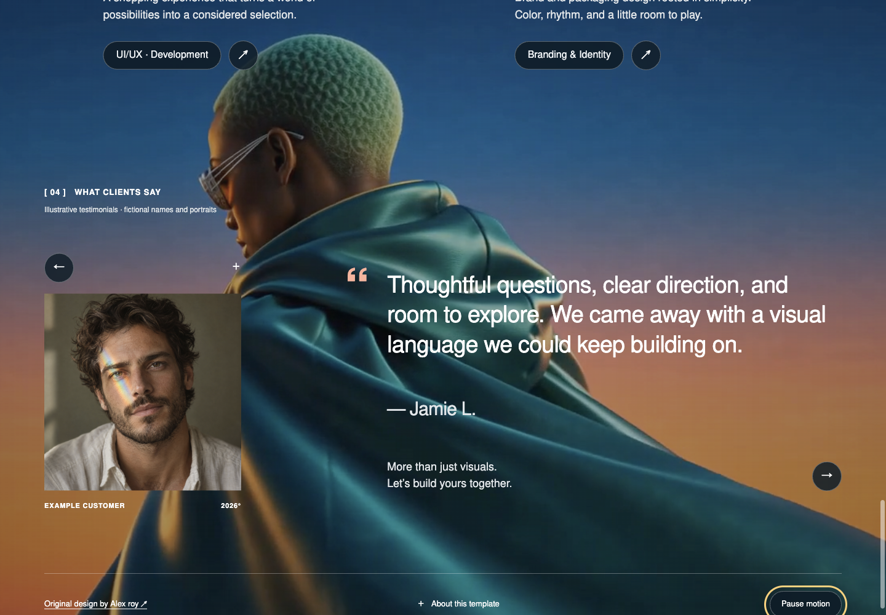

Same displayed column width. Left: source video frames, 1516×1080. Right: real Chrome screenshots, 1440×1000. Different scroll positions are labelled; these are composition comparisons, not pixel-diff scores. Original generated subjects, fonts and reconstructed video differ from the source. The design’s hero, services, staggered projects and testimonial hierarchy are preserved.
